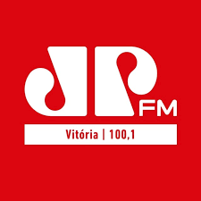
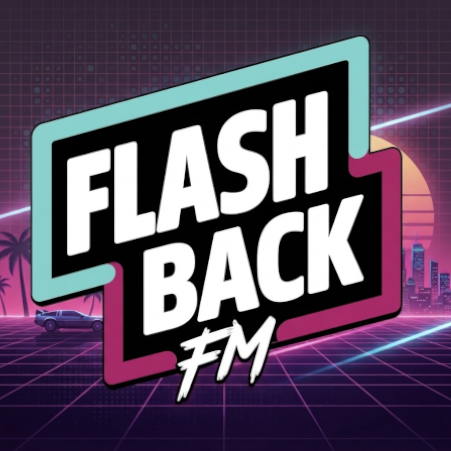

1
Rádio Nova Onda FM - Nova Venécia
2
Rádio Espírito Santo
3
Rádio Notícia Transanorte FM - Boa Esperança
4
Rádio Sintonia FM - Baixo Guandu
5
Rádio Massa FM - Ecoporanga
6

Rovem Pan FM - Vitória
7

Rádio FlashBack FM - São Paulo